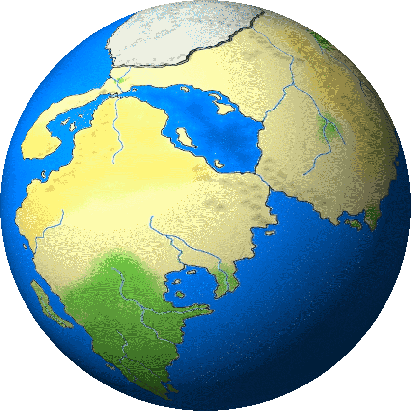

Cargando vista 3D...
Rueda: zoom (aléjala para ver el globo) · Mayús + rueda: girar · Alt + rueda: inclinar · Rueda presionada (o clic derecho) + arrastrar: girar e inclinar.

Clima en tiempo real
Haz clic en el mapa o mueve el cursor. Fuente: Open-Meteo.
Esperando un punto…
Leyenda
Add Data
Fuentes y método de la conversión PSAD56 → WGS84
Método: algoritmo de Molodensky de 3 parámetros, el que establece el art. 3.5 del DS 025-2016-EM para las zonas no cubiertas por los parámetros de Heighes. Se aplica a puntos, líneas y polígonos (todos sus vértices).
Parámetros: DMA/NIMA TR8350.2 (1987), Perú: ΔX −279 m, ΔY +175 m, ΔZ −379 m (EPSG:1208); elipsoide Internacional 1924 → WGS84. Precisión de la solución: ±6 m, ±8 m y ±12 m en X, Y y Z.
Datum oficial: WGS84/SIRGAS — RJ 079-2006-IGN/OAJ/DGC y RJ 086-2011-IGN/OAJ/DGC (fin del período de conversión).
Derechos mineros: Ley 30428, DS 025-2016-EM (El Peruano, 28-jul-2016), DS 051-99-EM y DS 001-2002-EM (modelo Heighes de 13 parámetros por zona catastral minera) e Informe N° 275-2016-INGEMMET-DC-UCM.
Aviso: esta conversión es referencial; para fines legales o catastrales mineros prevalece la transformación oficial del INGEMMET (SIDEMCAT).
Parámetros: DMA/NIMA TR8350.2 (1987), Perú: ΔX −279 m, ΔY +175 m, ΔZ −379 m (EPSG:1208); elipsoide Internacional 1924 → WGS84. Precisión de la solución: ±6 m, ±8 m y ±12 m en X, Y y Z.
Datum oficial: WGS84/SIRGAS — RJ 079-2006-IGN/OAJ/DGC y RJ 086-2011-IGN/OAJ/DGC (fin del período de conversión).
Derechos mineros: Ley 30428, DS 025-2016-EM (El Peruano, 28-jul-2016), DS 051-99-EM y DS 001-2002-EM (modelo Heighes de 13 parámetros por zona catastral minera) e Informe N° 275-2016-INGEMMET-DC-UCM.
Aviso: esta conversión es referencial; para fines legales o catastrales mineros prevalece la transformación oficial del INGEMMET (SIDEMCAT).
Capas añadidas
Ninguna capa agregada.
Consultas
✏️ Dibujar en el mapa
Elige una herramienta para empezar a dibujar.
Elementos dibujados
Los dibujos se guardan en este navegador. Arrastra una marca para moverla; con ✎ editas los vértices de rutas y polígonos. Tus dibujos aparecen como capas «Mis dibujos» en Cruce de capas, Consultas y Consultas avanzadas.
📏 Regla
Haz clic en el mapa (2D o 3D) para marcar puntos y medir la distancia entre ellos. No se dibuja nada permanente.
Retroceso deshace el último punto; Supr limpia la medición. Distancia horizontal en planta (geodésica sobre el elipsoide WGS84), sin considerar altitud ni desnivel. Con 🧲 activo, cada clic se ajusta (≈14 px) al vértice o borde más cercano de las capas visibles y de las capas agregadas.
⛰ Perfil topográfico
Traza una sección (o usa una línea cargada) y genera un perfil de ingeniería con DEM propio, curvas de nivel o el relieve web.
Clic = vértice · doble clic = terminar · Esc = cancelar.
Fuente de altitud
Si lo llenas, ese texto reemplaza a la fuente automática en el cajetín y en el Excel.
🛰 Satélite y DEM
Elige un área de estudio y obtén índices (NDVI y otros), la imagen satelital de Sentinel-2 o Landsat, o un DEM con pendiente y curvas de nivel. Se procesa en tu navegador con catálogos abiertos.
1 · Área de estudio
Rectángulo: 2 clics en esquinas opuestas · Polígono: clic por vértice y doble clic para cerrar.
Imagen
Parámetro
Reflectancia superficial (nivel 2) con máscara de nubes y sombras (SCL en Sentinel-2, QA_PIXEL en Landsat). Los índices y el DEM son datos de satélite a 10–30 m: sirven para análisis y planificación, no reemplazan un levantamiento topográfico.
⏱ Tiempo de recorrido
Adjunta la ruta (KMZ, KML, SHP, GeoJSON o GPX) y obtén la distancia y el tiempo de viaje de un extremo a otro (A → B).
Shapefile: sube el .zip o selecciona juntos .shp + .dbf + .prj.
Si el shapefile no trae .prj (coordenadas UTM)
La velocidad se ajusta a la pendiente (función de Tobler) cuando el relieve está activo; sin relieve se usa ~5 km/h (a pie) o ~3,8 km/h (mula).
Distancia geodésica en planta. Con relieve se muestra también la distancia inclinada y el desnivel (el suavizado del DEM puede subestimarlo). Las velocidades de vehículo son supuestos editables; el tiempo es una estimación y no incluye tráfico, clima ni estado de la vía.
📋 Tabla de Información Cruzada
0 registros